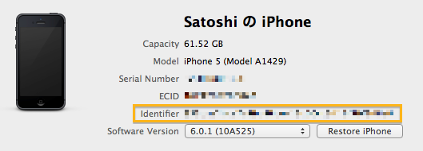

RubyMotion の小ワザ
この記事は RubyMotion Advent Calendar 2012 の8日目の記事です。
実際に RubyMotion を使って開発する上で、知っておくとちょっと便利かもしれない小ワザを並べてみます。
複数の iOS 機器をつないでいるときにデプロイする機器を指定する
仕事で iOS アプリの開発をしていると、Mac に複数の機器をつないでいることもしばしばあります。そういうときに rake device する際、idパラメータを指定するとでプロイする機器を選択することができます。
$ rake device id=hogehoge
この際に使うidというのは Identifier のことで Xcode の Organizer で調べることができます。

設定を yaml ファイルにまとめる
複数のアプリの開発をしていると、毎回 Rakefile に testflight の token を書くのは面倒ですし、Rakefile がごちゃっとしますよね。
僕は yaml にそういった設定情報を書くようにしています。
yaml ファイルはこんな感じ。
testflight: api_token: API_TOKEN team_token: TEAM_TOKEN distribution_lists: - DIST_LISTS identifier: com.example.coolapp development: certificate: 'iPhone Developer: foo (bar)' provisioning: '/path/to/foo.mobileprovision' adhoc: certificate: 'iPhone Distribution: foo' provisioning: '/path/to/foo.mobileprovision' release: certificate: 'iPhone Distribution: foo' provisioning: '/path/to/foo.mobileprovision'
Rakefile 内でこんな風に使います。
require 'yaml' conf_file = './config.yml' if File.exists?(conf_file) config = YAML::load_file(conf_file) app.testflight.sdk = 'vendor/TestFlightSDK' app.testflight.api_token = config['testflight']['api_token'] app.testflight.team_token = config['testflight']['team_token'] app.testflight.notify = true app.testflight.distribution_lists = config['testflight']['distribution_lists'] app.identifier = config['identifier'] app.info_plist['CFBundleURLTypes'] = [ { 'CFBundleURLName' => config['identifier'], 'CFBundleURLSchemes' => ['coolapp'] } ] env = ENV['ENV'] || 'development' app.codesign_certificate = config[env]['certificate'] app.provisioning_profile = config[env]['provisioning'] end
testflight で配布するときはこんな感じ。
$ rake testflight notes="hogehoge" mode=release ENV=adhoc
RubyMotion のバージョンを戻す
RubyMotion をアップデートして何かおかしなことが起きたら、以下のコマンドで任意のバージョンに戻すことができます。
$ motion update --force-version=1.15
tap を使って処理をすっきりまとめて書く
Object#tap を使うと、以下のように書くことができます。初期化の固まりを視覚的に認識しやすいので僕は気に入っています。
# 普通に書くと... label = UILabel.new label.frame = [[0, 0], [320, 10]] label.lineBreakMode = UILineBreakModeWordWrap label.numberOfLines = 0 label.font = UIFont.systemFontOfSize(12) label.text = text label.backgroundColor = UIColor.lightGrayColor label.alpha = 0.8 label.sizeToFit # tap を使ってまとまりを持たせる label = UILabel.new.tap do |l| l.frame = [[0, 0], [320, 10]] l.lineBreakMode = UILineBreakModeWordWrap l.numberOfLines = 0 l.font = UIFont.systemFontOfSize(12) l.text = text l.backgroundColor = UIColor.lightGrayColor l.alpha = 0.8 l.sizeToFit end
weak_frameworks
例えば deployment_target を 5.0 以上にしている場合でも、iOS 6.0 で起動中は Social フレームワークを使いたいというケース、あると思います。
ただし、普通に app.frameworks に Social を足してしまうと iOS 6.0 以上にしか存在しないフレームワークなのでビルドが通らなくなってしまいます。
そういうときは app.weak_framework を使えば、必要になったときにframeworkをロードするようになります。
もちろん、iOS 5.0 で Social フレームワークが使えるわけではないので以下のように切り分けは必要です。
def can_open_tweet? if defined?(SLComposeViewController) SLComposeViewController.isAvailableForServiceType(SLServiceTypeTwitter) else TWTweetComposeViewController.canSendTweet end end
以下のコマンドで使用するシミュレータの OS のバージョンを指定して起動することができます。
$ rake target=6.0
bundler を使う
RubyMotion 用の gem も BubbleWrap をはじめとしてたくさん出てきました。rails を使った開発のように Bundler を使用すると依存関係を管理することができ、複数人での開発などがしやすくなります。
$ gem install bundler $ bundle init # これで Gemfile が生成されるので必要な Gem を中に書く $ bundle install --path vendor/bundle # gem をインストールするパスを指定
Gemfile はこんな感じになります。
source "https://rubygems.org" gem 'bubble-wrap' gem 'motion-cocoapods' gem 'motion-testflight'
Bundler でインストールした gem を使うには Rakefile の冒頭の以下のようにします。
# -*- coding: utf-8 -*- $:.unshift("/Library/RubyMotion/lib") require 'motion/project' require 'bundler/setup' Bundler.require :default
一点注意があります。bundler でインストールされた rake とビルド時に使用する rake のバージョンが異なる場合、rake 実行時に以下のようなメッセージが表示されます。
$ rake rake aborted! You have already activated rake 10.0.2, but your Gemfile requires rake 0.9.5. Using bundle exec may solve this. /path/to/Rakefile:4:in `<top (required)>' (See full trace by running task with --trace)
bundle exec を使うと、Bundler でインストールされた rake を使うことができます。
$ bundle exec rake
mode が development か release かを判断する
RubyMotion のプロジェクトのビルドには development と release の2つのモードがあります。
development は開発用にシミュレータや開発機に転送するのに使い、release は AppStore への提出用です。
以下のようにしてモードを指定してビルドすることができます。
$ rake mode=development # または $ rake mode=release
現時点での両者の違いは、release モードにすると実行ファイルの最適化が行われることです。それによって、そのプロセスが無い分 development モードのビルドは早くなり、逆に実行時の速度が若干損なわれるそうです。（ベンチマークとっていないのでちょっとその差がどのくらいなのか、までは比べていませんが...）
さて、モードによって処理を分けたいところも存在すると思います。development モードのときだけログを出したりとか。
Rakefile の中では app.development, app.release というメソッドが使えます。それぞれブロックの中身が対応するモードのときにのみ実行されます。
Motion::Project::App.setup do |app| # ... app.development do # This entitlement is required during development but must not be used for release. app.entitlements['get-task-allow'] = true end end
Rakefile ではなく実行コードの方では RUBYMOTION_ENV という定数が使えます。
まとめ
思いついたものをざっと並べただけでした。既に開発をバリバリやっている方にはご存知の物も多いかもしれませんが、参考になれば幸いです。